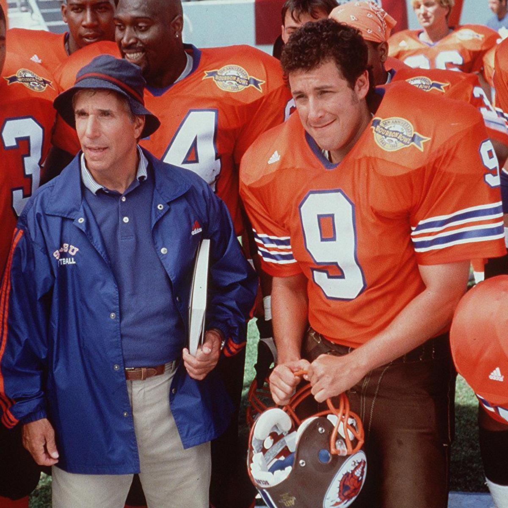

#1: The Wedding Singer (1998)
The wedding singer is one of the earliest and most iconic pieces defining Sandler's career. His future films after the success of the wedding singer would continue to greatly include many romantic comedies that would recieve critical aclaim and recognition in the industry. Sandler created the film to be enjoyable and suited for most ages, something becoming more and more rare with romantic comedies today.
#2: The Waterboy (1998)
The waterboy, released the same year as the wedding singer, focuses less on a romantic premise and gears towards its comedic value. Adam sandler stars as the main character "the waterboy" and endears the audience to cheer for him on his journey to become what he aspires to be, a great football player on his team. At the same time, trying to win the heart of his love interest proves difficult on his journey. This movie can forshadow that Sandler would have a hard time writing what he feels are quality scripts without often including a love interest.
#3: 50 First Dates (2004)

50 First dates could be widely regarded as one of sandlers most popular and iconic films of his career. The film keeps its charm and its romantic appeal even at its pg-13 rating, again less and less common today. In addition to its critical acclaim, it earned a whopping almost $200 milion dollars at it's release, supporting the claim to its success. A movie like this one is hard to come by.